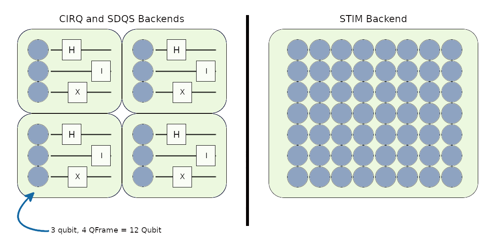

Quantum Operations¶
QFrame vs Qubit¶
Allocate qubit operations must be called differently according to different backends. Since Cirq and Sdqs are circuit simulators, qubits allocated as circuit blocks. STIM supports all invocation methods. More about backends covered in the next section.
Allocate Qubits¶
As expected from a quantum network simulator, QDNS can perform allocate qubit operations with different backends:
def alice_default_app(app: QDNS.Application, *user_args):
# STIM backend.
qubit = app.allocate_qubit()['qubit']
qubits = app.allocate_qubits(10)['qubits']
# Cirq and sdqs backend.
qubits = app.allocate_qframe(2)['qubits']
qubits = app.allocate_qframes(2, 10)['qubits']
print('Qubit pointers: ', app.allocated_qubits)
Qubit pointers: ['000000', '000001', '000002', '000003', '000004', '000005', '000006', '000007', '000008', '000009', '000010', '000011', '000012', '000013', '000014', '000015', '000016', '000017', '000018', '000019', '000020', '000021', '000022',
'000023', '000024', '000025', '000026', '000027', '000028', '000029', '000030', '000031', '000032']
allocate_qframe(s) function works as allocate_qubit(s) on STIM.
Deallocate Qubits¶
In order to use the hardware resources more effectively, the qubits whose work is finished should be released:
def alice_default_app(app: QDNS.Application, *user_args):
# Cirq and sdqs backend.
qubits = app.allocate_qframe(2)['qubits']
qubits = app.allocate_qframes(2, 10)['qubits']
app.deallocate_qubits(*qubits)
This process is especially necessary in circuit simulators such as Cirq and Sdqs backends.
Extend QFrame¶
This method extends the frame of qubit from back by one qubit. Extend function is only effective on Cirq and Sdqs backend:
def alice_default_app(app: QDNS.Application, *user_args):
# 2 Qubit Frame --> 3 Qubit Frame
qubits = app.allocate_qframe(2)['qubits']
app.extend_qframe(qubits[0])
Measure¶
Measurements on QNDS are made as follows:
def alice_default_app(app: QDNS.Application, *user_args):
qubits = app.allocate_qframe(5)['qubits']
operation = app.measure_qubits(qubits)
if operation['exit_code'] < 0:
print('Measure qubits is failed.')
else:
print('Results: ', operation['results'])
# More simple.
print('Results: ', app.measure_qubits(qubits)['results'])
# Non-destructive
print('Results: ', app.measure_qubits(qubits, True)['results'])
# Measure in other dimensions. Works on CIRQ
print('Results: ', app.measure_qubits(qubits, True, 2)['results'])
Results: [0, 0, 0, 0, 0]
Results: [0, 0, 1, 0, 1]
Results: [1, 1, 0, 0, 1]
Results: [1, 1, 0, 0, 1]
Gates¶
QDNS predefines many gates for users to use. “QDNS.tools.gates” module must be imported to use transformations on qubit:
import QDNS.tools.gates as gates
print(gates.gate_id_to_gate_name)
{10: 'IDGate', 11: 'RXGate', 12: 'RYGate', 13: 'RZ', 14: 'PauliX', 15: 'PauliY', 16: 'PauliZ', 17: 'SGate', 18: 'TGate', 19: 'HGate', 20: 'Psedo-HGate', 21: 'CRXGate', 22: 'CXGate', 23: 'CRYGate', 24: 'CYGate', 25: 'CRZGate',
26: 'CYGate', 27: 'CSGate', 28: 'CTGate', 29: 'CHGate', 30: 'IIGate', 31: 'SWAPGate', 32: 'iSWAPGate', 33: 'XXGate', 34: 'YYGate', 35: 'ZZGate', 36: 'MSGate', 37: 'MagicGate', 38: 'CVGate', 39: 'XYGate', 40: 'DCXGate',
41: 'bSWAPGate', 42: 'QFTGate', 43: 'WGate', 44: 'CCXGate', 45: 'CSWAPGate', 46: 'CCZGate'}
Apply gates on application:
def alice_default_app(app: QDNS.Application, *user_args):
qubits = app.allocate_qframe(2)['qubits']
app.apply_transformation(gates.HGate(), qubits[0])
app.apply_transformation(gates.CXGate(), qubits[0], qubits[1])
print('Results: ', app.measure_qubits(qubits)['results'])
Results: [1, 1]
Reset¶
Resetting qubits on QNDS are made as follows:
def alice_default_app(app: QDNS.Application, *user_args):
qubits = app.allocate_qframe(2)['qubits']
app.apply_transformation(gates.PauliX(), qubits[0])
app.apply_transformation(gates.PauliX(), qubits[1])
app.reset_qubits(qubits)
print('Results: ', app.measure_qubits(qubits)['results'])
Results: [0, 0]
Generating Pairs¶
We recommend using these functions to create bell:
def alice_default_app(app: QDNS.Application, *user_args):
pairs = app.generate_entangle_pairs(5)['pairs']
print('Pairs': pairs)
Pairs: [['020025600', '020025601'], ['020025700', '020025701'], ['020025800', '020025801'], ['020025900', '020025901'], ['020026000', '020026001']]
We recommend using these functions to create ghz state:
def alice_default_app(app: QDNS.Application, *user_args):
qubits = app.generate_ghz_pair(3)['qubits']
print('Qubits': qubits)
Qubits: ['020038400', '020038401', '020038402']